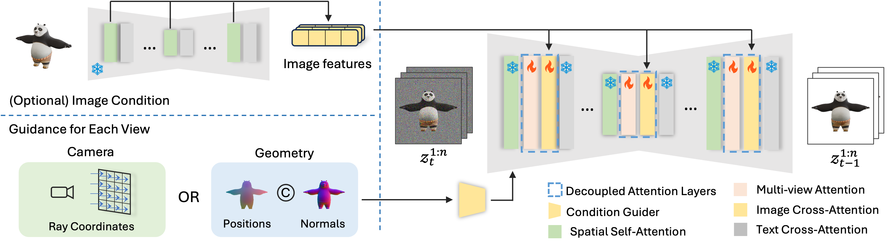

Method

MV-Adapter is a plug-and-play adapter that learns multi-view priors
transferable to derivatives of T2I models without
specific tuning, and enable T2Is to generate multi-view consistent images
under various conditions. At inference time, our MV-Adapter, which contains a condition
guider (yellow) and the
decoupled attention layers (blue), can be directly inserted into a personalized or distilled T2I to
constitute the multi-view generator.
 Our MV-Adapter consists of two components: (1) a condition guider that encodes camera condition or geometry condition; (2) decoupled attention layers that contain multi-view attention layers for learning multi-view consistency, and optional image cross-attention layers to support image-conditioned generation, where we use the pre-trained U-Net to encode the reference image to extract fine-grained information.